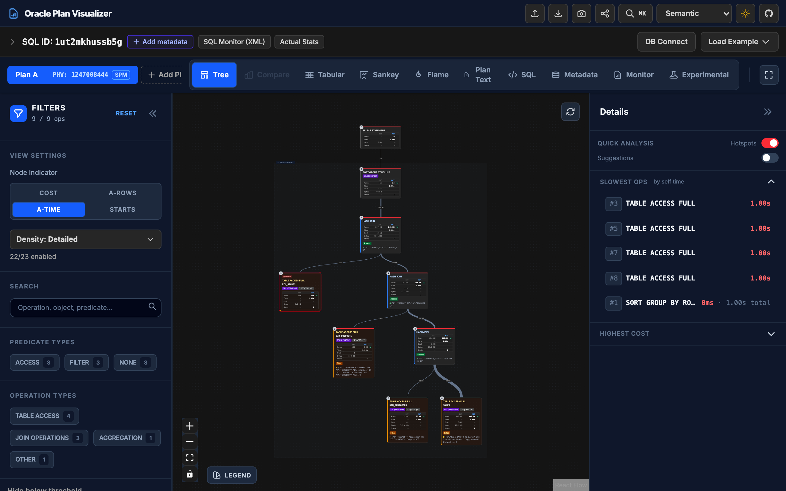
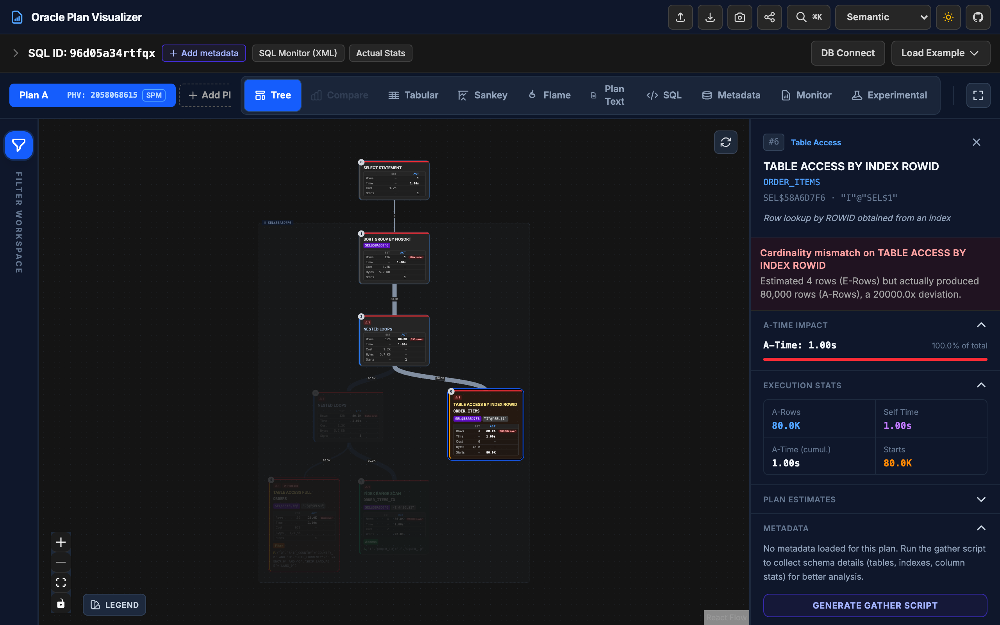
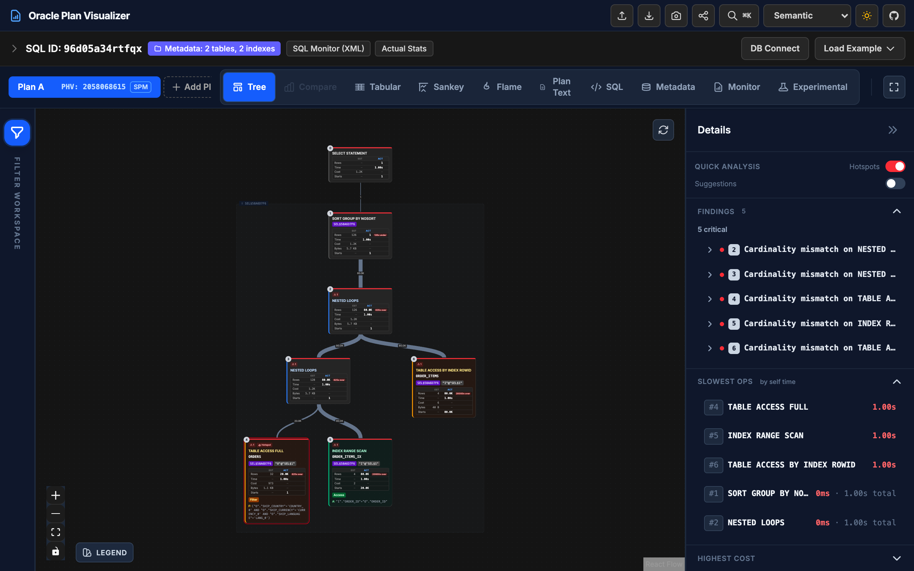
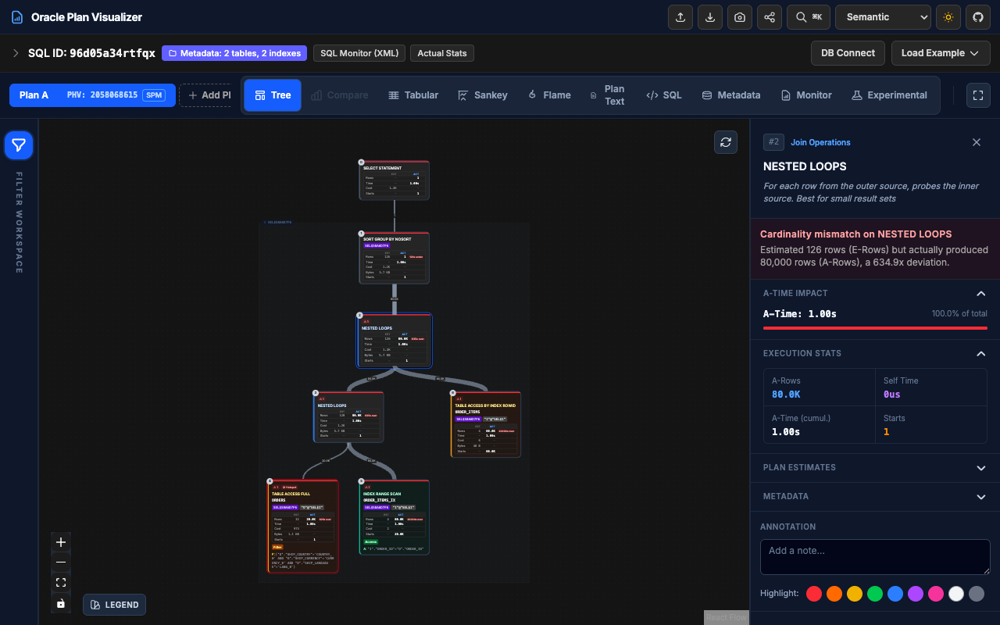
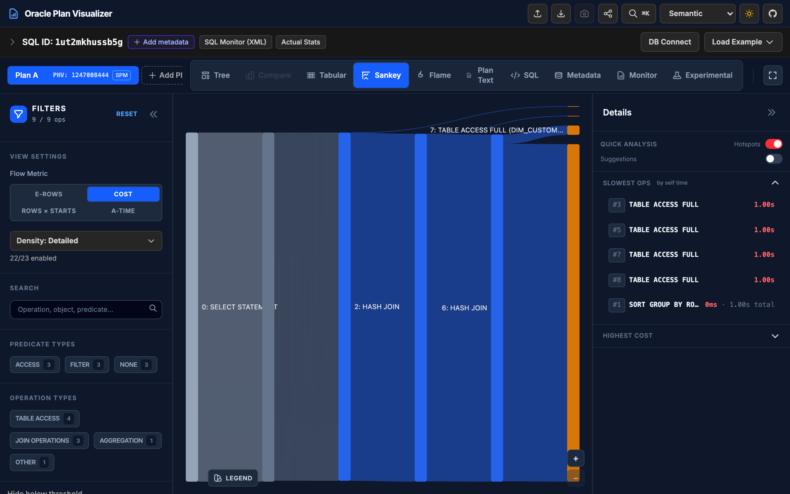
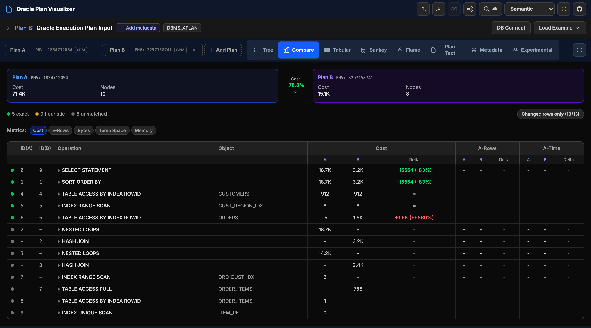
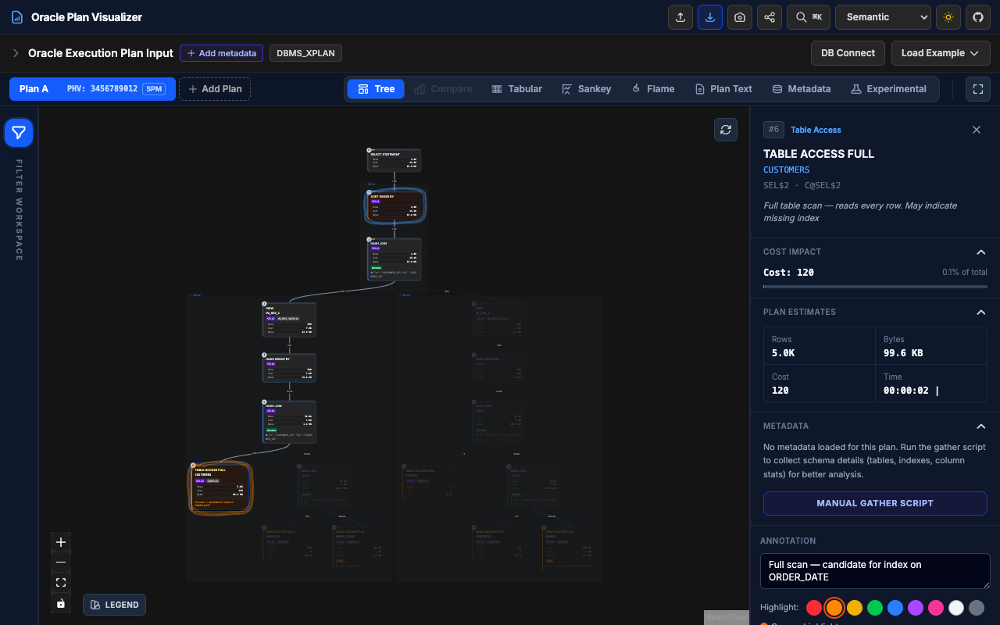

The Oracle execution plan visualization
that I always wanted to have
Paste DBMS_XPLAN or SQL Monitor output and get an interactive diagram with hotspots, cardinality analysis, and plan comparison. No more scrolling through a wall of ASCII pipes.

Quick start
30-second quick start
Paste your plan
Any supported format: DBMS_XPLAN, SQL Monitor text, or SQL Monitor XML. Format is auto-detected.
Pick a view
Tree, Sankey, raw plan text, or compare. Switch anytime without re-parsing.
Find the problem
Hotspots and cardinality mismatches are flagged automatically. No manual hunting.
Feature tour
Built around how you actually tune a plan
Interactive plan tree
The plan renders as a real tree, laid out with a custom algorithm (Dagre as fallback), not a scrollable text block. Click any node to see its full attributes, predicates, and cardinality analysis. Cmd/Ctrl-click for multi-select with aggregated stats. Arrow keys move between parent, child, and sibling nodes.
Try this live →
Hotspot detection & runtime stats
When SQL Monitor data is available, every node shows A-Rows, E-Rows, A-Time, and Starts. The node with the highest A-Time gets a red ring and a "Hotspot" badge automatically. When nothing is selected, a summary panel lists the top 5 nodes by A-Time, cost, and worst cardinality mismatch. Click any entry to jump straight to it.
Try this live →
Cardinality mismatch analysis
Compares the optimizer's E-Rows estimate against the actual A-Rows for every node and flags the divergence with severity badges (warn at 3x, bad at 10x). A dedicated filter slider hides everything except nodes that exceed a mismatch threshold you set, so stale statistics and bad selectivity guesses surface right away.
Try this live →
Sankey data-flow view
The same plan rendered as a D3 Sankey diagram, where band width encodes volume flowing between operations. Toggle the metric (rows, cost, A-Rows, or A-Time) to see which step is moving the most data or burning the most time.
Try this live →
Plan comparison
Load two plans side by side: before and after an index change, a hint, or a statistics refresh. A 3-pass node matcher (exact ID, then heuristic operation/object signature) lines up equivalent steps across both plans and computes deltas across 8 metrics: cost, rows, bytes, A-Rows, A-Time, starts, temp space, and memory, with improvement or regression flagged on each.
Try this live →
Annotations & sharing
Attach timestamped notes to any node, mark it with one of 7 highlight colors, or group several nodes under a named label. Export the annotated plan as a JSON file, load it back later, or hand it to a teammate. Re-importing validates it against the original plan.
Try this live →
Input formats
Paste what you already have
No conversion step. Copy the output straight from SQL*Plus or SQL Developer, paste it in, and the format is detected automatically.
DBMS_XPLAN
Standard optimizer plan: rows, bytes, cost, predicates.
Plan hash value: 3456789012
--------------------------------------------------
| Id | Operation | Name | Rows | Cost |
--------------------------------------------------
| 0 | SELECT STATEMENT | | 1000 |15234 |
| 1 | SORT ORDER BY | | 1000 |15234 |
|* 2 | HASH JOIN | | 1000 |15210 |SQL Monitor (text)
Runtime stats from V$SQL_PLAN_MONITOR: A-Rows, A-Time, Starts.
SQL Plan Monitoring Details (Plan Hash Value=2058068615)
================================================================
| Id | Operation | Name | E-Rows | A-Rows | A-Time |
================================================================
| 0 | SELECT STATEMENT | | | 1 | 00:00:01 |
| 1 | HASH GROUP BY | | 1 | 1 | 00:00:01 |SQL Monitor (XML)
Full detail from DBMS_SQL_MONITOR.REPORT_SQL_MONITOR, type='XML'.
<report db_version="19.0.0.0.0">
<sql_monitor_report version="4.0">
<report_parameters>
<sql_id>96d05a34rtfqx</sql_id>
</report_parameters>
<plan_monitor>...</plan_monitor>